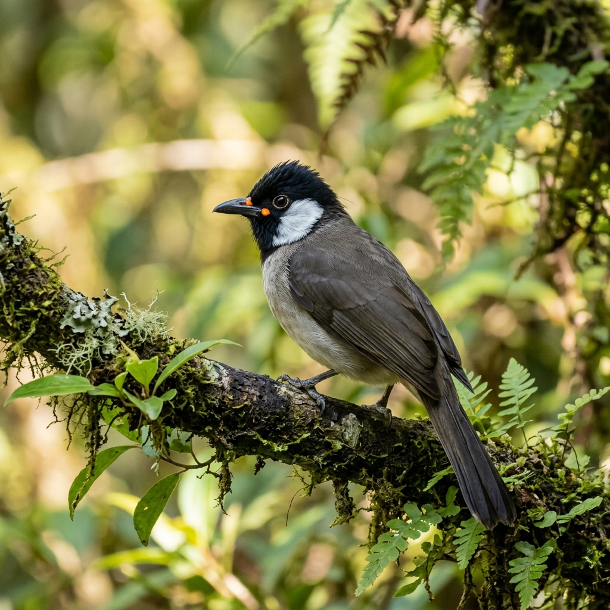

哈爸遠端視訊心法啟發，都蘭及台東市在地教練現場手把手輔導。
社會服務書籍撰寫，及店家進銷存 POS 自動化工具實用測試。
第一、五週來都蘭享受大自然，第三週在都市線上連線，免奔波通勤。
這不只是一堂普通的科技課。我們以開源創客精神，由哈爸的系統架構指引，在地方建立起能夠「自體繁殖」的 AI 共學社群。
台東縣東河鄉都蘭村舊部 14 之 2 號
專注於 Agent 塑造與文章著作、翻譯。由陳豊鍾教練帶領，著重在文字與文化輸出的「易讀 (Easy Read)」公共擴散。
台東市正氣北路166巷90號
專注於 進銷存、庫存管理與 POS 系統防呆防老應用。由陳品碩教練帶領，幫助在地小店家低成本數位轉型。
隔週五晚上 19:00 - 21:00，每次兩小時，結合哈爸引導與雙教室手把手練習。
用說話讓 AI 整理出漂亮的文章，現場拍照並讓 AI 生成短影音腳本。
都蘭：學員互相錄音訪談，產出個人第一篇生命故事稿。
台東市：引導店家學員用語音整理出品牌故事。
手機拍照丟給 AI，自動辨識植物、鳥類，規劃 AI 深度旅遊導覽路線。
都蘭：辨識都蘭特有植物，產出都蘭 AI 綠色地圖。
台東市：店家實作商品照片特徵辨識與自動說明書生成。
用 AI 撰寫社群文案，輔助店家做簡單庫存收支管理，舉辦聯合成品發表會。
都蘭：學員用 AI 寫出自家農產行銷案。
台東市：操作商用進銷存防呆範本，體驗自動記帳。
針對外地學員的第一、五週實體入營安排。
提供「在地居民」與「外地渡假」兩大參訓通道，支持以物易物與勞務折抵。
適合設籍於都蘭、台東市區之在地居民、店家及小農。
適合外縣市遠端工作者、數位游牧或熱愛慢活度假者。
以物易物折抵機制：接受自產特產咖啡豆、除草勞務等方式折抵學費。請於報名表填寫折抵提案。
